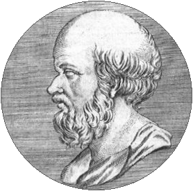

O que são?
Um número primo é um número natural maior que 1 e que não é formado pelo produto de outros dois números menores, ou seja, só é divisível por 1 e por ele mesmo. O 5, por exemplo, pode ser formado apenas por 1x5. Já o 4 pode ser formado por 2x2 e, portanto, não é primo.
Como calcular?
No mundo dos computadores, algoritmos são o passo a passo para resolver um problema. Um exemplo famoso é a receita de bolo: por meio da receita, nós conseguimos resolver o problema de transformar ingredientes em um bolo delicioso!
No caso dos números primos, existem alguns algoritmos que conseguem gerar uma sequência de primos dentro de um dado intervalo. O mais antigo deles, o Crivo de Eratóstenes é um algoritmo simples e um dos mais eficientes para encontrar primos pequenos. Foi proposto por Eratóstenes de Cirene, um matemático grego que viveu no século III a.C.

Código
Laboris consequat incididunt sunt ea dolor ex aute eu excepteur exercitation. Officia elit magna non cillum occaecat aute ipsum dolor eu deserunt. Voluptate commodo dolore officia laboris occaecat incididunt sit culpa occaecat ullamco amet irure. Commodo laborum sit pariatur dolor laboris proident cillum aliqua cillum. Irure voluptate adipisicing quis ea duis nostrud adipisicing. In labore culpa nostrud reprehenderit et reprehenderit elit sunt. Deserunt labore aliqua magna eiusmod officia nostrud aliqua reprehenderit irure veniam ex.
Quem sou eu?
Oi! Eu sou o Gustavo, estudante de Ciência da Computação na Universidade Federal do Oeste do Pará (UFOPA). Gosto de jogos, programação, computadores, matemática e tecnologia em geral.
Por que fiz esse site?
Pra resumir bem resumido... ter nota em Programação para Web. Esse site é um projeto básico para aprender conceitos da criação de websites. Ele foi feito com HTML e JavaScript, e estilizado com CSS. Além disso, apesar do tema bem aleatório, é uma boa oportunidade pra exercitar a implementação de algoritmos - que nesse caso é o Crivo de Eratóstenes :)